固定した未コミット統合候補の実ブラウザー画面。仕上げ・家のDEV fixtureと、注入なしの本番形式の初回旅程を別の列に分けています。異なる列を同じ利用者の自然な進級履歴としては扱いません。公開先・実機iPhone・子どもの理解の証拠ではありません。実URL、revision/version、flag、候補、保存と開始終了hashは各reportとREADMEを参照してください。
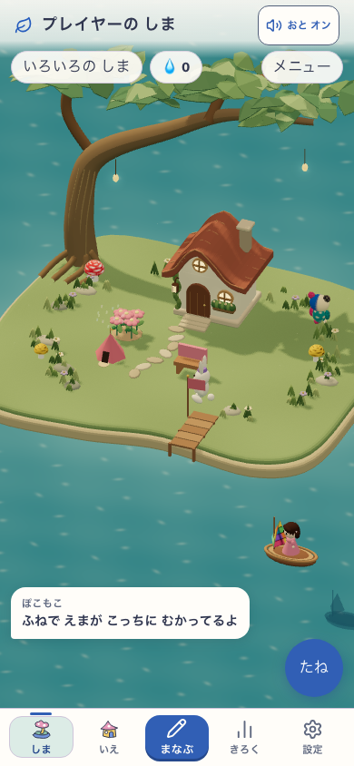
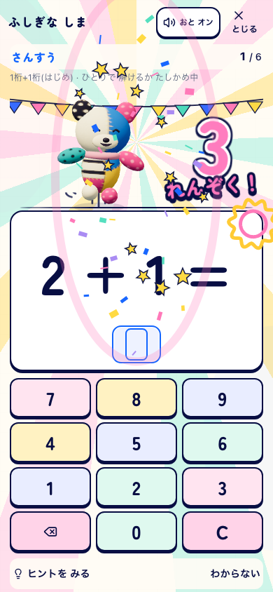
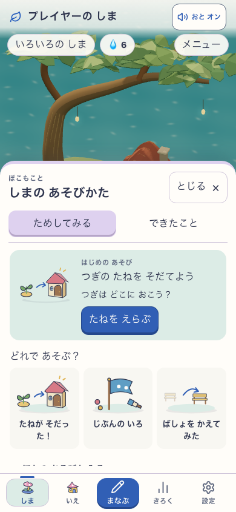
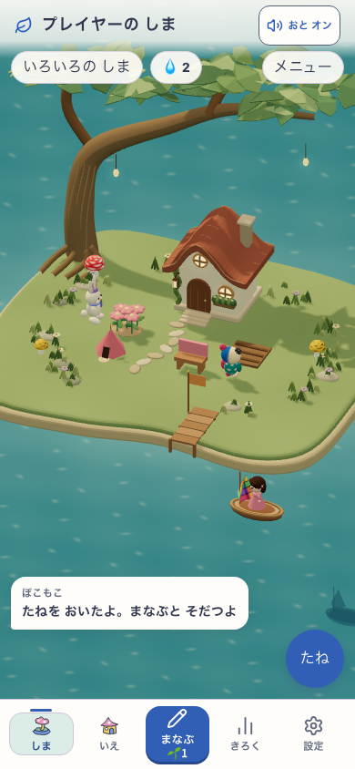
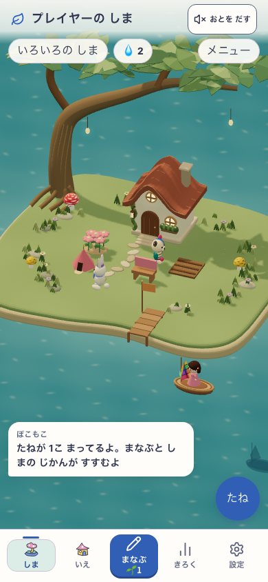
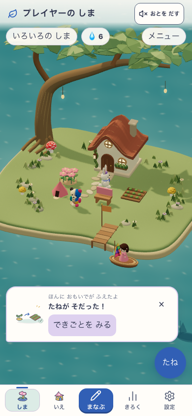
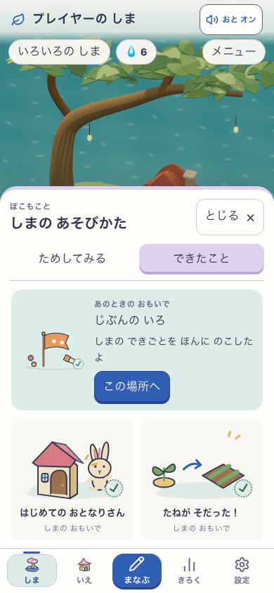

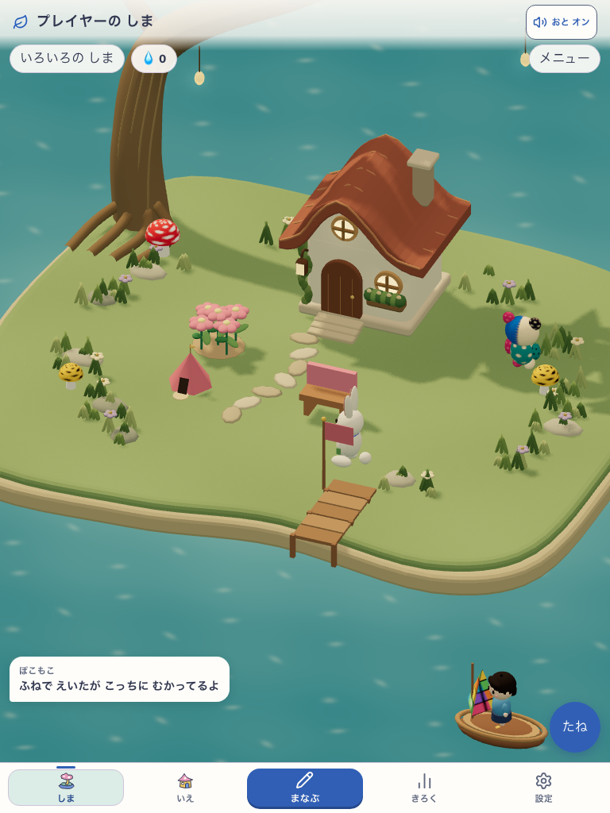

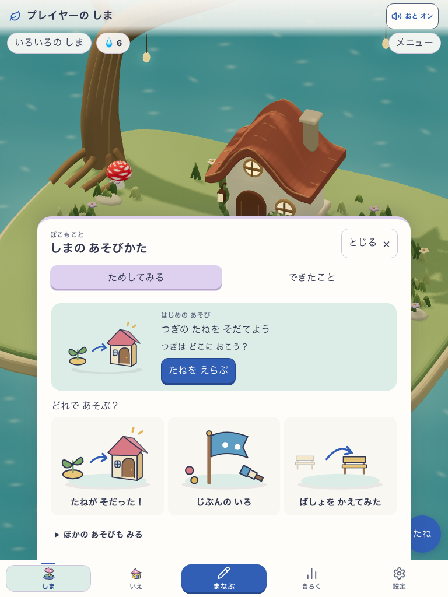
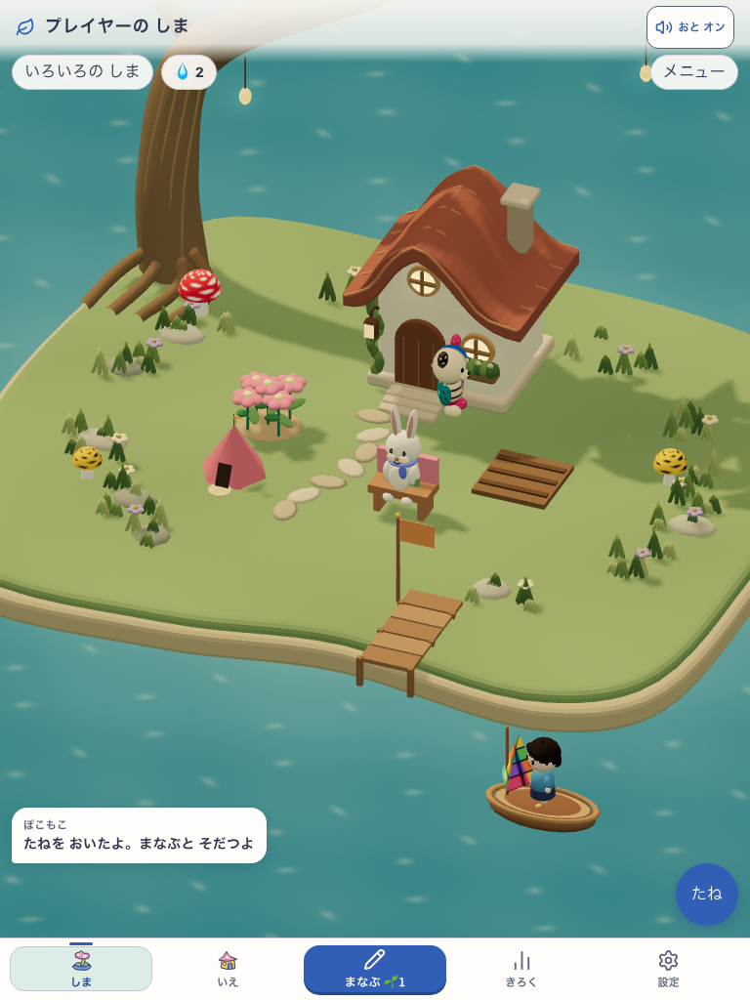
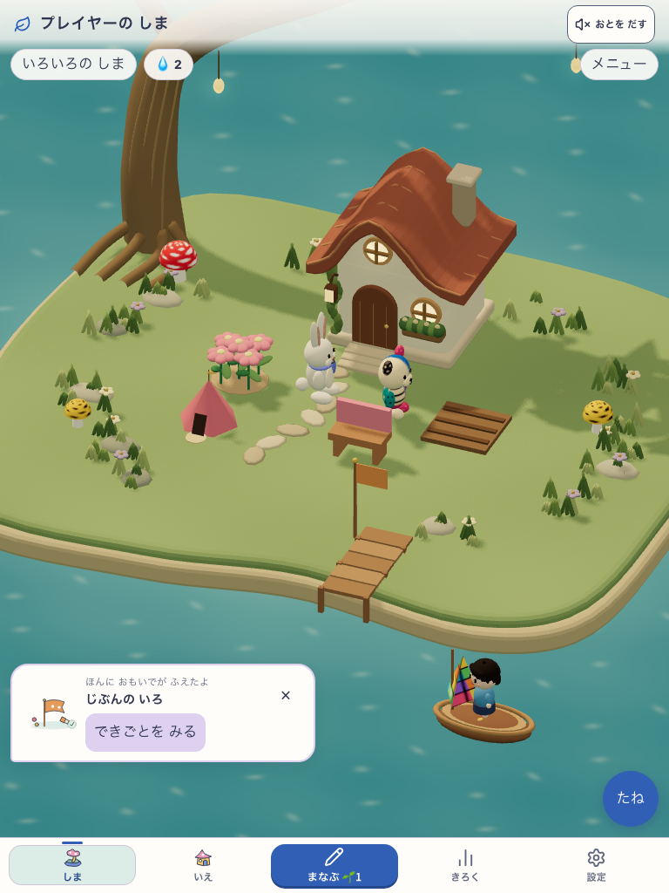
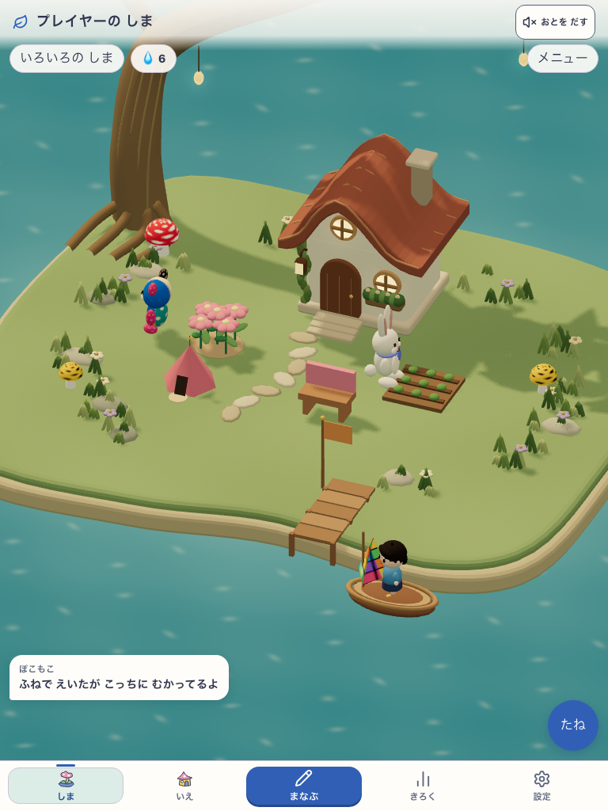
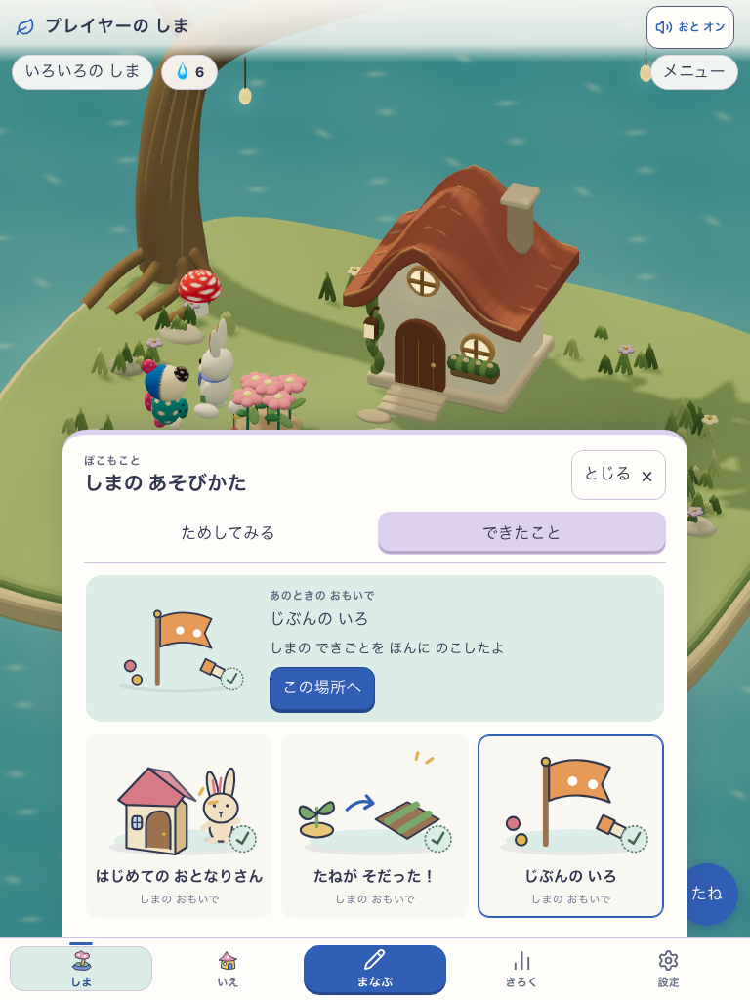
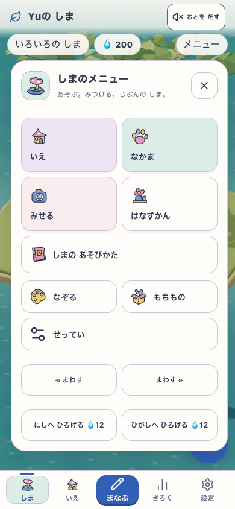

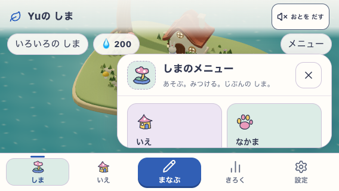
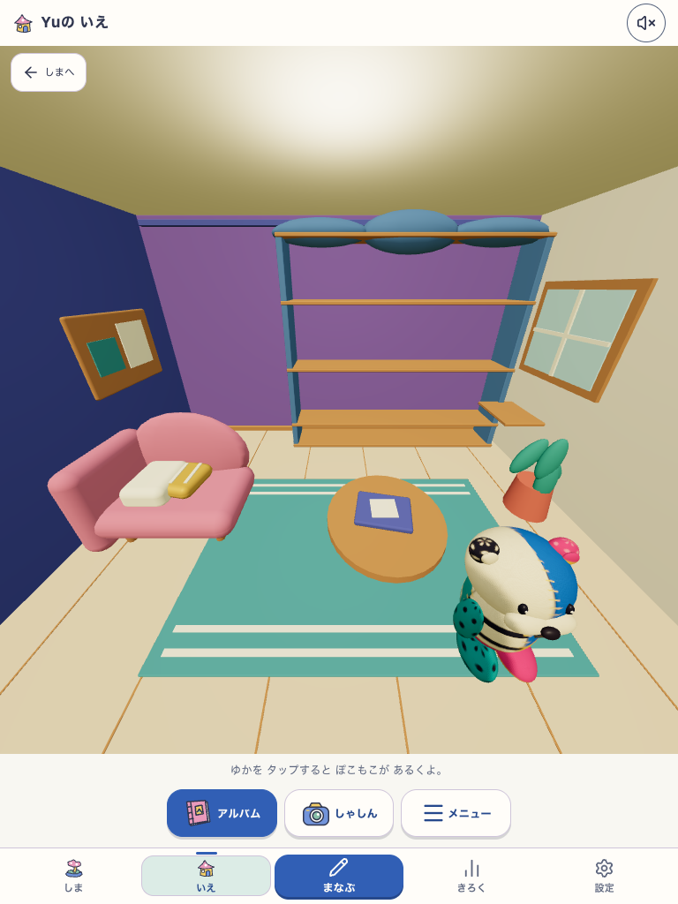